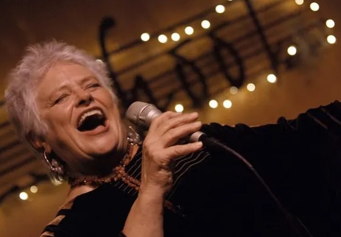
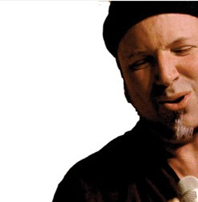

| Bobby McFerrin | Rhiannon | Joey Blake | David Worm | Judi Donaghy Vinar | |||||
|---|---|---|---|---|---|---|---|---|---|
|  | |
 | |||||||
| Lead Vocalist | Musical Diva | Bass Extrodinaire | Vocal Percussionist | Soulful Songstress |
The preferred method for a musical group is to list the top albums for the recording artists however,
while the individuals in the groups have their own solo work that has been released out into the world,
this musical group is known for their live performances. When the group was simply Rhiannon, David Worm and Joey Blake,
the group was titled, "WeBe3" and the former group does have an album. In my opionion, most of the recordings
for the exception of the works of Bobby McFerrin & Rhiannon, do not translate as well as when performing live
Listed below are my top three Gimmie5 videos avialable on YouTube
Rating:

Currently this video comes in #1 for my top live video performance.The vocal talents
of all memebers are displayed in this video, especially around minute 9:11 where Rhiannon
comes in with a kick ass solo. Check it out!
Rating:
This intimate performance comes in at #2. It seems that in this video that
the improvisational skills of all members have been displayed in an optimal fashion
Observe the audience (Which appears to be attendees of some type of conference)an how joyful they are!
Rating:
This video featuring "Trance" who apparently strolled into the concert with a few
of his friends after a performance of his own in another venue. I chose this video
which comes in at #3 due to the display of audience participation that Bobby McFerrin
never fails to include in performances. What a joy it is to see this group perform live!